Mo 2026-08-10
Long, Triathlonrad-Test
- 3:00h @220W
- Aeroposition und komplettes Race-Setup testen
- 80g Kohlenhydrate/h
2026-08-10 bis 2026-08-16
Nach externem Schwimmprogramm
45min @4:45/km
Nach externem Schwimmprogramm
W32 umfasste bis zum 9. August 423 TSS. Der Schwerpunkt lag mit dem Long Bike über 3:00h bei 230W, dem Threshold Bike 3x15min bei 309 bis 310W und dem Long Run über 1:13h bei 4:38/km GAP klar auf Rad- und Laufentwicklung. Das Long Bike war mit 4,7% HR-Drift noch ausreichend stabil, während das nüchterne Basic Bike bei gleicher Leistung am 6. August mit 0,6% Drift deutlich weniger fordernd war. Der Threshold Run wurde erneut schneller als die Vorgabe gelaufen, deshalb bleibt eine weitere Progression der Laufintensität bewusst aus. Die zwei Swim-Sessions über zusammen 3.325m liefern Technik- und Umfangskontinuität, validieren die CSS von 1:35/100m aber noch nicht ausreichend. Die drei Canyoning-Zustiege von Freitag bis Sonntag verursachten 16 TSS, sind aber wegen der zusätzlichen Geh- und Beinbelastung als Ermüdungskontext zu berücksichtigen.
Für W33 ist ein Long Bike auf dem Triathlonrad sinnvoll, aber als kontrollierter Setup-, Ernährungs- und Aeropositions-Test am Montag, nicht als neuer Belastungsrekord. Am 9. August liegen HRV 123ms und die 7-Tage-HRV 115ms im 90-Tage-Korridor von 97 bis 128ms, der Ruhepuls bei 38bpm und der Schlaf bei 8:13h mit Score 84, daher spricht die Readiness für diese kontrollierte Belastung. Die zurückgegangene Last mit ATL 54, CTL 69, TSB +15 und ACR 0,781 liefert nach der kompakten W32 ausreichende Frische, rechtfertigt aber keine zusätzliche harte Schwellen-Session. Die zwei Kurztriathlons am 15. und 16. August sind mit Wichtigkeit 1 Trainingswettkämpfe, Nizza folgt jedoch bereits in fünf Wochen mit Wichtigkeit 5. Deshalb setzt W33 auf einen spezifischen Long-Bike-Test, einen lockeren Lauf, die zwei Schwimmeinheiten nach externem Programm und nur eine kurze Aktivierung, während die Wettkämpfe die Intensität der Woche liefern. Ein Long Run und ein Threshold Run entfallen, damit die muskuläre Frische und die Belastungsverträglichkeit für das Doppelwochenende erhalten bleiben. Für das langfristige Ironman-Ziel ist der wiederholte Aeropositions- und Ernährungsreiz wertvoller als zusätzliche Intensität in dieser Rennwoche.
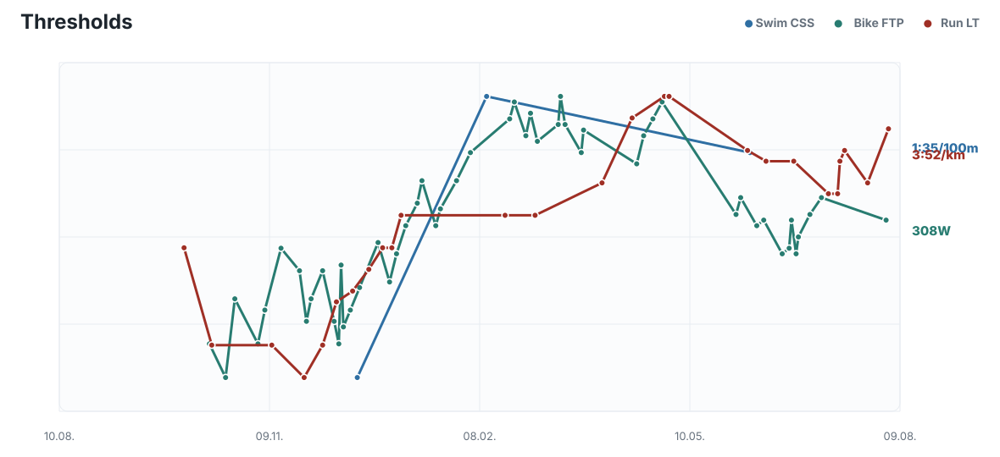
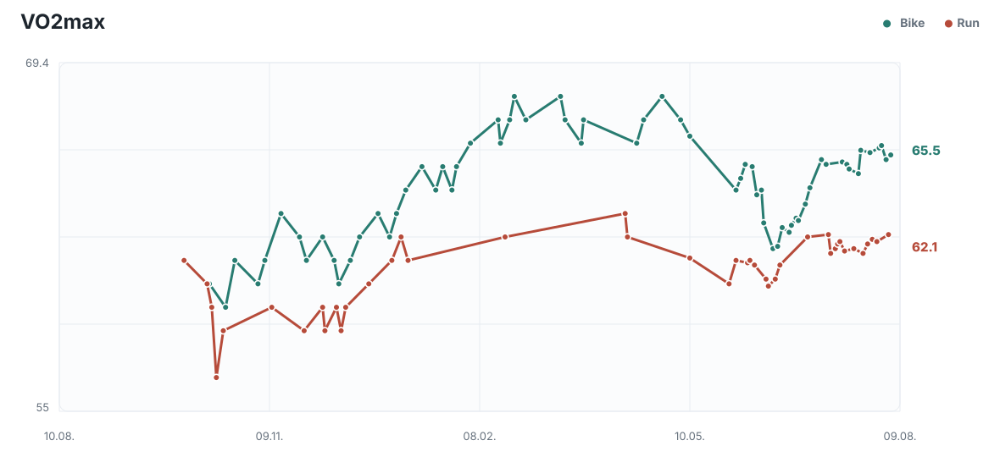
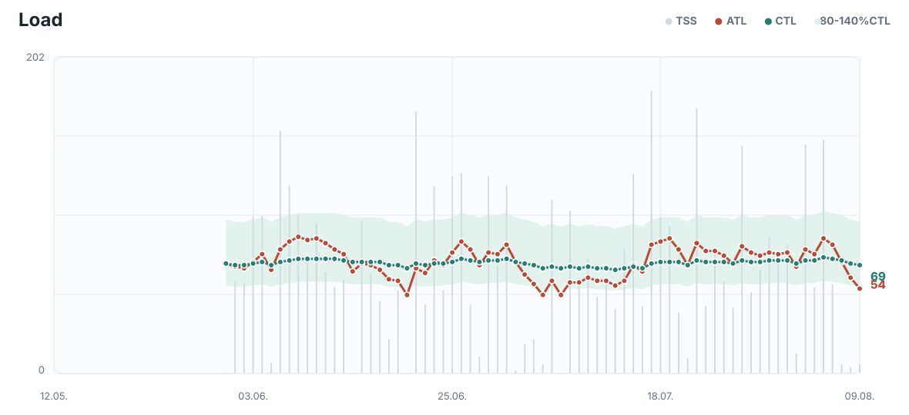
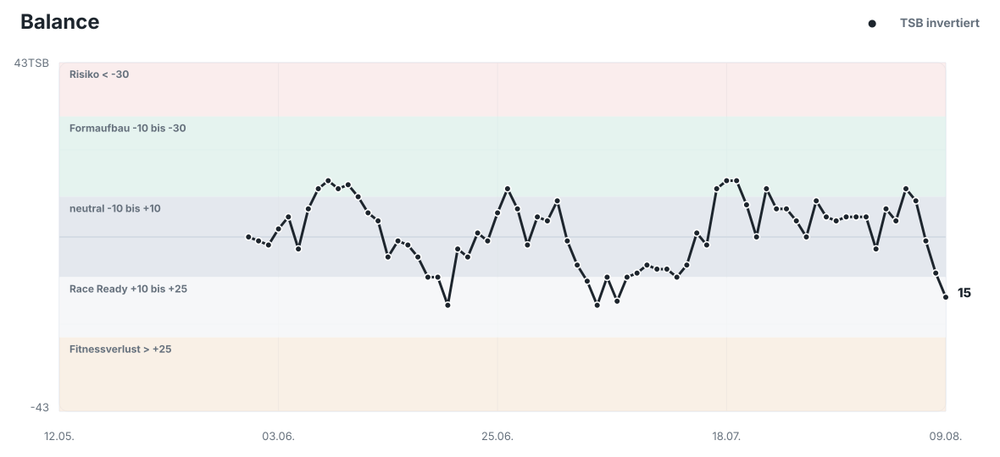

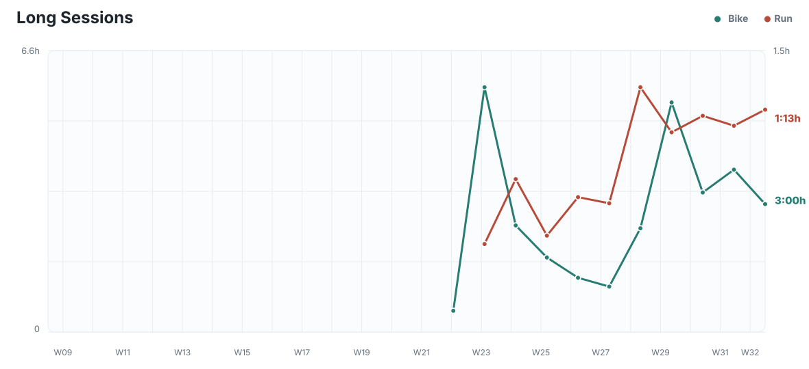
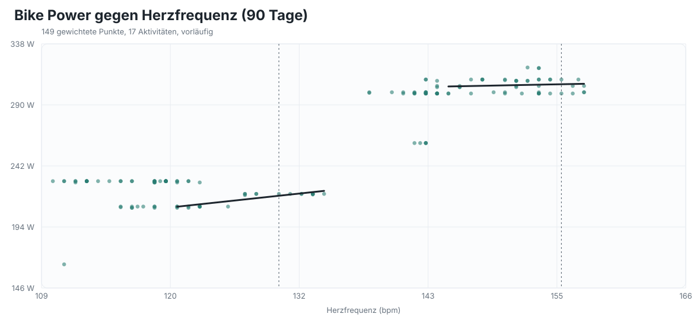
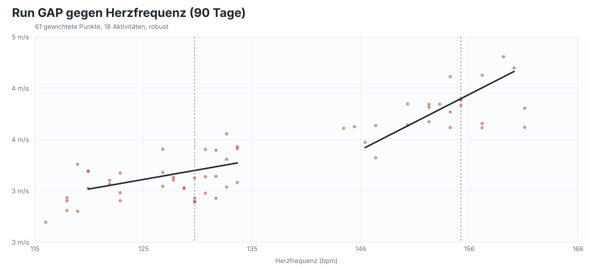
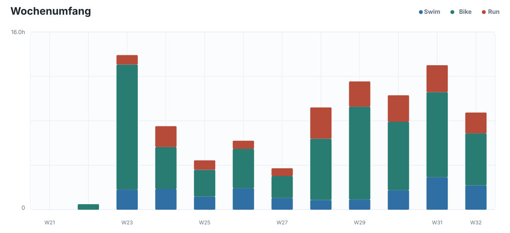
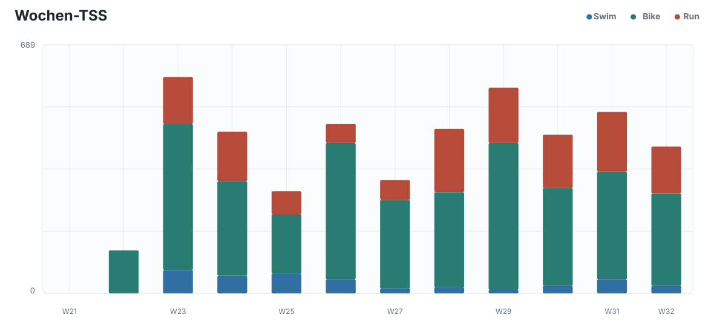
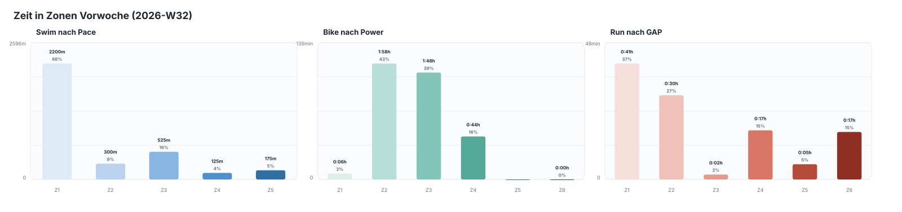
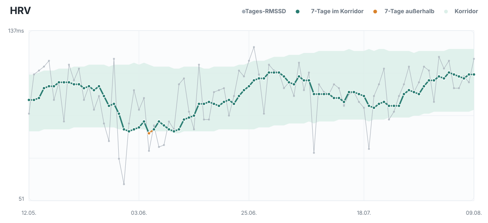
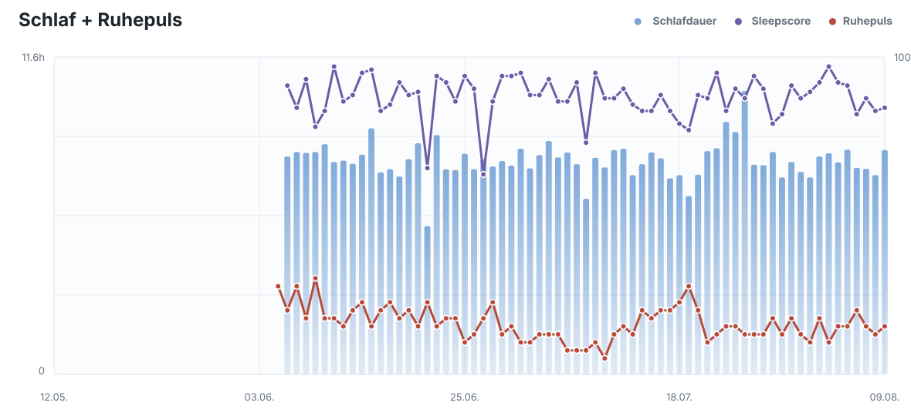
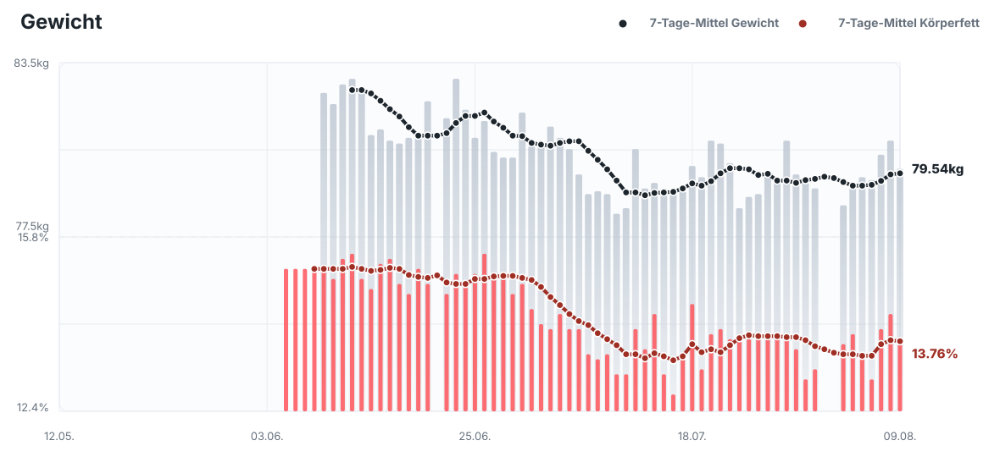
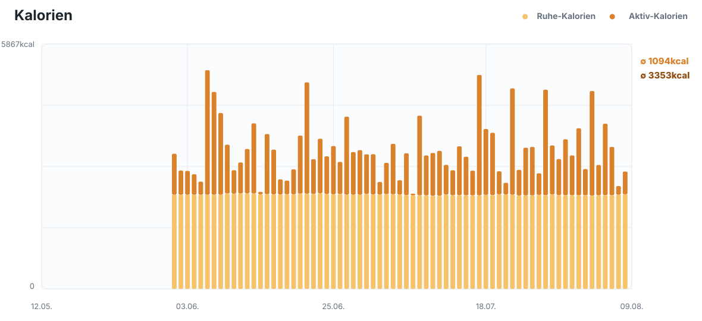